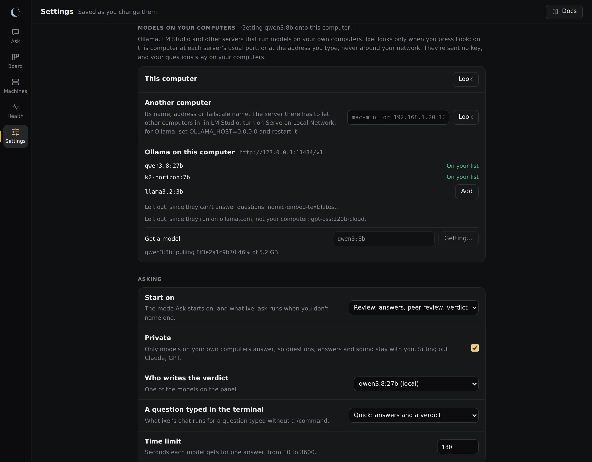
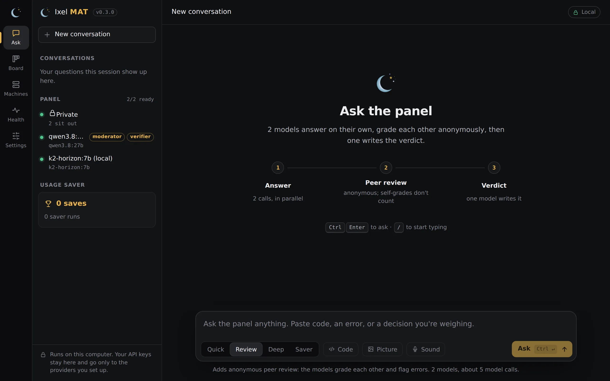

Local models
A model running on your own computer costs nothing per question, has no usage limit, and keeps your questions at home. Ixel works with Ollama, LM Studio, and any model server that speaks OpenAI's chat API, on this computer or another of yours. Turn on Private, and only those models answer.
Picks from Artificial Analysis, read 4 October 2026
Set one up
Ixel doesn't run models itself: a model server does, and Ixel asks it. Pick one:
Ollama
Install Ollama
From ollama.com. It runs in the background, ready for Ixel at
127.0.0.1:11434.Get a model
In the app, open Settings, find Models on your computers, and press Look beside This computer. Under Ollama, type a model's name in Get a model and press Get. Pick one from the table below, and see Get a model for where it comes from. Or in a terminal:
ollama pull <model>Add it to Ixel
Press Add beside the model, and it joins your panel. Or run
ixel setup, which sees Ollama running, lists your models, and asks which to add. No key needed.
LM Studio
Install LM Studio
From lmstudio.ai, and download a model in it. Pick one from the table below.
Start its server
Turn on LM Studio's local server, in its Developer tab, so other programs can ask the model. It listens at
127.0.0.1:1234.Add it to Ixel
In the app, open Settings, find Models on your computers, press Look beside This computer, and press Add beside a model. Or run
ixel setup, which sees LM Studio's server, lists your models, and asks which to add. No key needed.
Another server
Any server with OpenAI's chat API works, on this computer or another one of yours. Look in Settings and ixel setup find these on this computer, each at its usual port:
| Server | Port |
|---|---|
| Ollama | 11434 |
| LM Studio | 1234 |
| llama.cpp's server (and LocalAI) | 8080 |
| vLLM | 8000 |
| Jan | 1337 |
| GPT4All | 4891 |
| KoboldCpp | 5001 |
On another port, type the address beside Another computer in Settings, such as localhost:9000. Or add it to your settings file, ~/.config/ixel-mat/config.toml:
[agents.gpubox]
type = "http"
url = "http://gpu-box:8000/v1" # the address the server shows; Ixel adds /chat/completions
model = "the-model-name" # as the server lists it
label = "My GPU box (local)"Then add "gpubox" to [review] agents if you've set that list, or leave it unset to have every model on the panel.
ixel setup keeps the models you added by hand or in the app: it lists them and asks before keeping them. Each model keeps its effort and pictures settings. It writes the file afresh, so comments you wrote in it aren't kept; the file from before stays beside it as config.toml.bak.
Which model fits your computer
The best open models a computer with that much memory can run. On a Mac, count all your memory, since the graphics share it. On a PC, count your graphics card's memory: a model that doesn't fit there still runs, but much more slowly.
| Memory | Best open model | Score | Needs | Next best |
|---|---|---|---|---|
| 8 to 16 GB | K2 Horizon 7BInstitute of Foundation Models · 7B | 21 | about 6 GB | Also: K2 Horizon 3.7B (16); MiniCPM5-2B (12) |
| 24 to 64 GB | Qwen3.8 27B (medium)Alibaba · 27B | 28 | about 18 GB | Also: K2 Horizon MoVA 36B A4B (25); K2 Horizon 7B (21) |
| 128 GB | Qwen3.8 27B (medium)Alibaba · 27B | 28 | about 18 GB | Also: K2 Horizon MoVA 36B A4B (25); Ling-3.0-flash-VL (25) |
| 256 to 512 GB | GLM-5.3-FlashZ AI · 320B, 18B active | 42 | about 194 GB | Also: K2 Horizon 375B A23B (31); Qwen3.8 27B (medium) (28) |
The best open models overall: MiMo-V2.6-Pro (46, 1000B, about 602 GB), GLM-5.3-Flash (42, 320B, about 194 GB), K2 Horizon 375B A23B (31, 375B, about 227 GB). Those need a server, or a Mac with a lot of memory.
"Needs" is an estimate: about 0.6 GB for each billion parameters, which is a typical 4-bit download, plus 2 GB for the conversation. A smaller download of the same model needs less and answers a little worse; a larger one needs more. Model servers often name models differently from the benchmark, so search for the model's name in Ollama's or LM Studio's library.
Scores are on the same scale as the cloud picks, so you can see what you give up. Today's best local models score well below the best cloud ones, which is why the mix below works well.
Models on your computers
In the app, Settings has a card for the models on your own computers:
- Look beside This computer asks each server's usual port on this computer. Beside Another computer, type its name, address or Tailscale name. Ixel looks only when you press Look, and only there: it never searches your network.
- Each server it finds lists its models. Add puts one on your panel, with no key. Models that can't answer a question, such as embedding models, are left out, and so are Ollama's cloud models (names ending in
-cloudor:cloud), which run on ollama.com. - A model you added shows its server's address under Models. Change the address to move the model to another of your computers that has it.
- Take off removes one of these models from your list. If it writes the verdict, verifies for Saver or decides for Triage, pick another model for that first. Ixel won't take off the last model on your panel, or the last one drafting for Saver.

Looking sends nothing of yours and no key: Ixel asks the server directly, never through a proxy, and doesn't follow a redirect. Ixel never gives a key to a server it finds or adds. (One you add to the settings file by hand with token_env gets that key, as you set.) Settings saves only an address on this computer or your own network, and asks the server there again before saving it. Adding a company's model or a program stays with ixel setup.
Get a model
Under each Ollama in Models on your computers, type a model's name as ollama.com/library shows it, such as qwen3:8b, or one from Hugging Face as hf.co/ and its name. Press Get, and that Ollama downloads it onto the computer it runs on, showing how far along it is. Then press Add beside it.
- Where it comes from: Ixel only asks your Ollama to get the model. Ollama downloads it from ollama.com, or from Hugging Face for an
hf.co/name, asollama pulldoes. They see that computer's address and the model's name. Ixel sends nothing else. - One at a time. Closing the page stops the download. Getting the same model again carries on from where it stopped.
- Cloud models aren't offered. A name ending in
-cloudor:cloudruns on ollama.com, not on your computer. - LM Studio and the other servers download models in their own app.
Use another computer
A model server on another of your computers works the same way, such as a desktop with a big graphics card, or a Mac with a lot of memory. In Settings, type its name, address or Tailscale name beside Another computer (mac-mini, 192.168.1.20 or mac-mini.tail1234.ts.net) and press Look. ixel setup asks for one too. With no port, Ixel tries each server's usual port there.
Let other computers in
On that computer: in LM Studio, turn on Serve on Local Network in its Developer tab. For Ollama, set
OLLAMA_HOST=0.0.0.0and restart it. Its firewall has to allow the port too.Anyone on that network can use itOllama and LM Studio don't ask for a password. Once a server lets other computers in, anyone on the same network can ask it questions, and with Ollama, download or delete its models. Do this only on your home network or Tailscale, never on café or office Wi-Fi. For Ollama, setting
OLLAMA_HOSTto that computer's Tailscale address instead of0.0.0.0lets in only your Tailscale network.Use a name Ixel can tell is yours
Ixel adds only a computer on your own network or your Tailscale network: a private address, a Tailscale address, or a name that leads only to those. It checks the name again each time it asks a question, so it has to look like yours: a short name like
mac-mini, or one ending in.local,.lan,.internal,.home.arpaor.ts.net. Your router's own names, likemac-mini.fritz.box, don't count; use the address instead. A name you type is looked up like any computer name, through your usual DNS.
A server anywhere else, such as one on the internet, goes in your settings file by hand, and isn't counted as yours. Calls to your own computers are free in the cost line. Plain http:// across your network isn't encrypted; over Tailscale it is.
Private
Turn on Private in Settings, under Asking, and only the models on your own computers answer. Or in your settings file:
[review]
private = true
A model counts as yours when Ixel asks it directly, with no key, at an address on this computer or your own network. These sit out:
- Every company's model, and every program Ixel starts (Claude Code, Codex, OpenCode and the rest), since Ixel can't see where a program sends things.
- A verdict writer that isn't one of yours: the author of the best-rated answer writes the verdict instead.
- Saver's verifier, if it isn't one of yours. Saver won't run until you pick one of yours to verify.
- Triage, unless one of your models decides.
- A server that takes a key or is marked
billing = "api": that's most likely a gateway that passes questions on to a company. - Ollama's cloud models (
-cloudor:cloud), which run on ollama.com.
Private can't see what a server does with a question. A server on your network that passes questions on to a company still counts as yours, such as a proxy like LiteLLM set up without a key, or an app connected to a cloud model. Add only servers that run the model themselves.
With Private on:
- If none of your models can answer, Ixel says so and sends nothing.
- Sound isn't sent to OpenAI or Groq to be written out. The only exception is a speech server on this computer that you set as
openai_urlorgroq_urlunder[sound]in the settings file; it still needs your OpenAI or Groq key saved, and Ixel sends it that key. - The terminal chat,
ixel reviewandixel askuse only your models, and/handoffin Ask is off, since Handoff's coding agents send work to their companies. Anixelchat that was already open keeps the setting it started with: close it and start it again after you turn Private on. - A conversation asked with Private on isn't carried into a follow-up once Private is off.
- Pictures you make with
ixel imagestill go to xAI or OpenAI. With--fileor--diff, only a model of yours reads your files to describe the picture; the description still goes out. - The Board's Review… and Fix… send work to the agent you pick there.
- A question asked through the plugin, in Claude Desktop, Claude Code, Codex or Cursor, came from that app's model in the first place.
ixel reviewkeeps your last three questions on your computer inconversation.json, as it does with Private off. Privacy says how to clear it.- Ollama, LM Studio and the other servers are programs of their own, with their own settings and logs.
Mix local and cloud
The cheapest panel that still gets things right: local models do the drafting and reviewing, and one strong cloud model checks their work. That's Saver:
[saver]
verifier = "opus" # one strong model, on a key or a subscription
drafters = ["qwen", "gpubox"] # your local models
verifier_effort = "low" # it only has to checkOr in the app: Settings, Saver. The drafters' calls are free; the big model reads their drafts and replies in a few words, so it costs far less than writing the answer itself. The four jobs says more. With Private on, the verifier has to be one of your own models too.
Each review's cost line counts local calls as free:
Cost: $0.042 on API keys · 3 calls on your subscriptions · 1 free on your own hardware · 12.3k tokens in, 2,100 out
Pictures
A local model doesn't get the pictures you attach in the app, since most can't read them. For one that can, such as a vision model, turn it on in Settings, Pictures, or add accepts = ["image"] to its section of the settings file.
Thinking settings
A model server on your computer gets thinking settings from minimal to high, so xhigh and max are sent as high. Whether the model uses it is up to the model and the server. The table above only counts the settings Ixel can send.
What stays on your computer
With Private on, your questions, your code and the answers go no further than your own computers. A few parts of Ixel reach the internet for other reasons, and none of them sends your questions:
- The terminal chat checks GitHub for a new version once a day.
[updates] check = falseturns it off. - Get a model has your Ollama download from ollama.com or Hugging Face, when you press Get.
- Making pictures sends your description to xAI or OpenAI, only when you use it. With Private off, Sound sends a recording to OpenAI or Groq the same way.
- The Board reads a project's pull requests from its git host when you open it.
- Opening Settings asks each company you've saved a key for which models it has, and Health's Check now,
ixel statusandixel doctor --checkask each model whether it answers. These send your key, never a question, and Private doesn't stop them.
Privacy has the whole list.